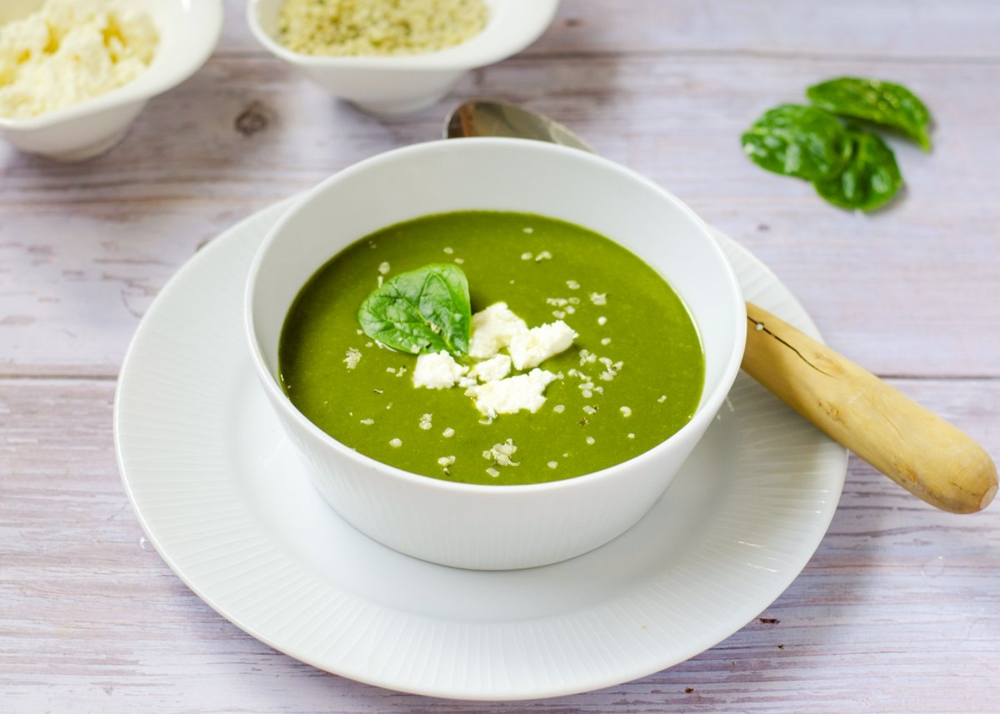

Crema de espinacas
Introducción:
Este platillo va acompañado con queso doble crema al gusto y pan en forma de crutones.
- 1 cda de aceite
- 1/4 de taza de cebolla
- 1 cda de ajo
- 3 cdas de apio
- 3 tazas de espinaca
- 1/2 taza de arroz
- 2 tazas de agua
- sal y pimienta
- 3 tazas de caldo de verduras
- queso doble crema al gusto
Preparación:
- Sofríe la cebolla, ajo y apio en una olla con un poco de aceite durante 3 minutos
- Agrega la espinaca, arroz y agua, durante 15 minutos o hasta que el arroz esté cocido.
- Licúa la mezcla anterior, vierte en una olla y agrega caldo de verduras.
- Cocina durante 15 minutos o hasta que la crema de espinacas esté lista
- Sirve la sopa en un tazón, decora con queso doble crema
